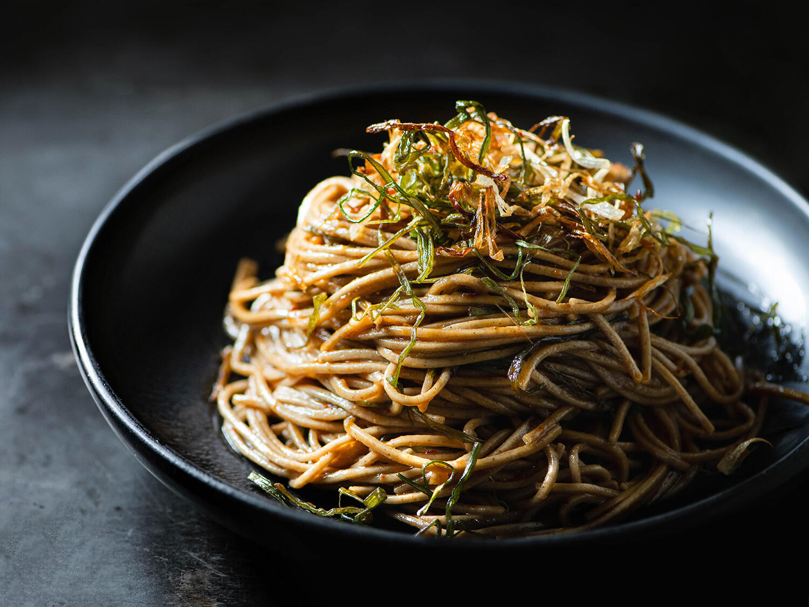

>
Scallion Oil Noodles Recipe

Description
It is astonishing how much scallion flavor you get in these noodles from the infused scallion oil. (Save the flavorful oil left over from cooking the scallions to use in dressings and for drizzling over dumplings or poached fish.) Then take it over the top with a garnish of crunchy fried scallion slices. This recipe is from Taiwanese-American cook Lisa Cheng Smith's spectacular Lunar New Year feast.
Ingredients
- 10 Scallions
- 1 Cup grapeseed or vegetable oil
- 1 Lb. fresh Shanghai or lo mein noodles
- 1 Cup soy paste
- 2 Tbsp. soy sauce
Steps
- Cut scallions crosswise into thirds, separating dark green parts from white and pale green parts. Slice lengthwise into very thin strips, keeping dark green and white parts separate.
- Pour oil into a cold large wok or high-sided skillet. Add white parts of scallions to oil and set over medium-low. Cook until oil starts to bubble, about 5 minutes. Add dark green parts of scallions and stir to combine. Cook, stirring occasionally, until scallions are crisped and deep golden brown, 20-30 minutes. Do not rush this; slow, gradual browning as the liquid in the scallions evaporates will yield the best flavor.
- Using a spider or slotted spoon, transfer scallions to paper towels to drain. Let scallions and oil cool. Pour oil through a fine-mesh sieve into an airtight container; discard solids. Cover and chill scallion oil until ready to use.
- Cook noodles in a large pot of boiling water according to manufacturer's directions, adding 1 Tbsp. reserved scallion oil to the cooking water when you add the noodles. Drain noodles, reserving ½ cup cooking liquid, and return to pot. Add ½ cup scallion oil and toss to coat. Add soy paste and toss to combine. Add soy sauce and toss again, adding cooking liquid as needed to loosen sauce.
- Transfer noodles to a bowl or platter and top with three-fourths of crispy scallions. Serve with remaining scallions in a small bowl alongside.
- Scallions can be fried 1 day ahead. Keep scallion oil chilled; store scallions between layers of paper towels in an airtight container at room temperature.